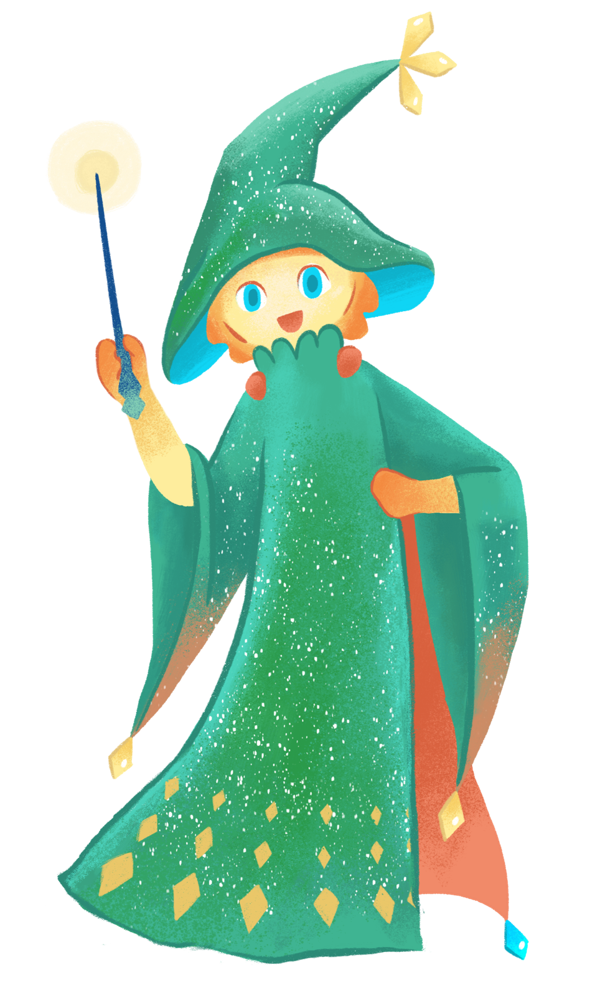
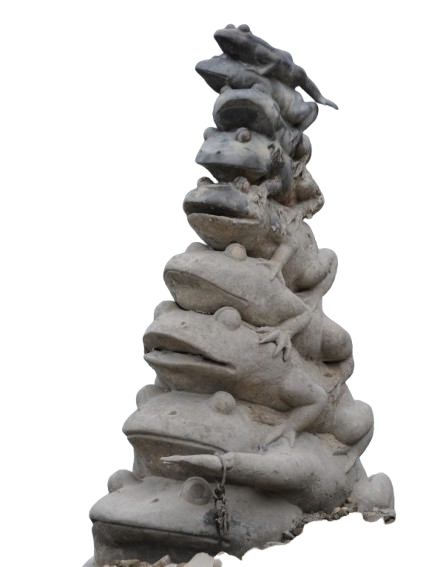

🎨 台灣藝術尋寶
藝術環島地圖之旅
跟著地圖指標，與光魔法師和阿目一起造訪台灣各地的藝術場館吧！

北部關卡：大師雕刻體驗工坊
請先選擇你想體驗的藝術大師創作項目：
中部關卡：沈政瑩的日月潭九蛙寫生
請點選不同的觀測水位高度，觀察實體雕像與九蛙露出的數量變化！
目前水位：-- 公尺

請選擇左側的水位進行觀測。
南部關卡：嘉義與高雄藝術知識尋寶
回答出正確的歷史知識，即可成功解鎖珍貴的藝術大師畫作卡！
題目載入中...
東部關卡：江賢二的抽象藝術色彩畫布
點選左側大師在台東常使用的抽象元素色塊，在右側畫框中拼貼創作出專屬您的《比西里岸之夢》抽象畫作！
🌊 太平洋深藍
☀️ 比西里岸金黃
🌿 東岸山脈綠
🔮 藝術園區紫
目前已拼貼色塊：0 / 8 層